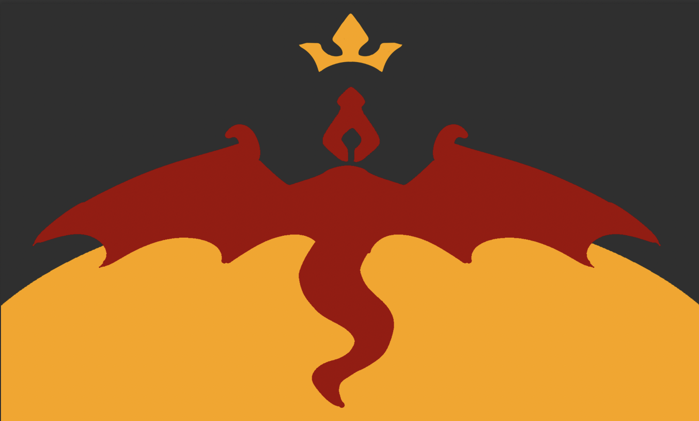

Rust Wiki
Snakevein is a very magic heavy city. Most of the transportation involves magic, it is known for its prestige spellcasting schools, and good economy. While there are many people living in poverty, it is not overwhelming.
The city consists of 3 main layers. The bottom layer is where all of the non magic users and middle class/poor people live. Also the majority of the crime takes place on this level because it’s easier to find places to hide and do secret shady business.
On the second layer is a large gang war between two gangs. The first group, The 5 Head gang, worship Tiamat. The second group, the Church of Ash, worships Rithar. The 2nd layer, or the middle layer, is for the middle class and rich people. The 2nd floor is made of a bunch of massive stone brick pathways connecting to each other in a winding labyrinth of streets. To get to this floor you need to go up one of the large “Elevated inter-layer transportation units'' which are literally just elevators. The way it works is a large metal platform rests on a lege, then one of the mages uses the telekinesis spell to carry it up to the layer it has written on it. The people call them ELTUS (eltoos), but the mages who operate them prefer people to call them by the extended name, but nobody really does.
There are some knights who patrol the upper layers of the city on the backs of griffons. They wield lances and shields. There are also 4 main Archmages who live in Snakevein, Talithil Trismoira is a male sun elf who has their tower open to the public so they can fulfill all their magical needs, such as scrying on someone, getting some lore on an old antiquity or magic item, advice, or if they need a certain spell casted. He is one of the four Archmages of the city. Another one of them is a male kobold named Vren Stoutbone, a very uptight and prideful kobold mage who holds many secrets in his tower. He never lets anyone in, and anyone who does get in usually runs away because he keeps a pet Phoenix that guards his tower, along with several other smaller elementals. He specializes in magic involving the elements and summoning elementals. The third one is a Red Dragonborn named Yinkatok Jessaadi. Yinkatok is an old woman, but she has charm and personality. She still loves to do all of the things she did while in her youth and will occasionally visit Greenscale University to do presentations on magic. She has a cane that she can unsheath to turn into a frost brand and specializes in Evocation magic. The fourth mage is male forest gnome named Yejin. Yejin is a somewhat plump gnome who wears commoner’s clothes. He really doesn’t stand out in a crowd and he likes it that way. He loves magic, but he despises the fame and public recognition you get from being one of the top most powerful magic users in the city.
This shop sells guns. They have 10 Pistols, each for 250 gold (1d10 + dex damage. Loading Property) and 4 Muskets, each for 500 gold (1d12 + dex. Loading, Two Handed). 10 bombs each for 150 gold, and 20 powder horns of gunpowder each for 35 gold. They also have 100 bullets, 10 bullets for 3 gold. And one Spellblaster Sidearm. A spellblaster is a pistol that uses magic to fire its shots that costs 3,000 gold. When you shoot it you can expend a 1st spell slot and fire a blast of force energy. You can choose 1 target within 60 ft of you. Roll for armor class, making a spell attack roll. On a hit the target takes 2d10 force damage and must make a DC 12 Strength saving throw or be pushed back 5 ft. For each level above first the damage increases by 1d10 and the DC increases by 1.
The Snakevein Bakery, found on the second floor in district four is a small, relatively cheap bakery selling a variety of baked goods. This bakery in particular is notorious due to the fact that the party repeatedly comes here and buys out the ENTIRE STOCK for no reason. Some notable things they sell are:
Redirect to The Casino
The Gauntlet of Justice is an adventurer’s guild that offers various services to adventuring parties such as logging, quests, and starting equipment. They also sell adventuring essentials like armor, weapons and gear. You can also take out a loan from them.
The guild house provides free logging to adventurers for 1 month as long as they complete 1 quest per 2 weeks. If they complete a “Mid Level” quest they can stay in a comfortable room. If they complete a “High Level” quest they can stay in a wealthy room.
At the start of the game when the players first arrive there are 4 Quests available: The posters read the following:
The guild house sells all adventuring gear, weapons, armor, as well as a few magic items. The gear stand is run by a man named Larry. Larry looks like he has potential to look fancy, but he grooms himself poorly. His hair is frizzled, he hasn't shaved in a while and he wears all black torn clothes. He won’t rip the players off, but if the players try to steal from his shop they're gonna have to deal with him. He sells five of every weapon and armor in the PHB. The magic items being sold are:
When you take out a loan from them you must pay them back by completing a quest for them, or paying them the amount you borrowed within 30 days. If neither requirements are met the adventurer will be arrested and charged with fraud and be sent to jail for a quarter of a lifespan.
The guild house provides insurance for adventurers. The insurance secures that if an adventurer dies, that a cleric will revive them using resurrection. A player must pay 100 gold a week for the service. If they require a use of the resurrection service they can do so, but then the price of the insurance will increase by 50 gold per week each time.
The hatmaker is a wizard who can make any hat a player desires… for the right price. A hat with no properties is worth 1 silver. Anything with properties is up to the DM’s Choice. This store is where Malvur gets his absurd amount of hats.
For assistance in creating a spell it is 10 gold per day working on it. When you get assistance you gain advantage on the check to make the new spell. He has a spell scroll of every spell levels 1-6. He has the 7th level spells, Delayed Blast Fireball, Crown of Stars, Dream of the Blue Veil, Mirage Arcane, Teleport. He has the 8th level spells, Antimagic field, Control Weather, Demiplane, Feeblemind, Incendiary Cloud, Mighty Fortress, Power Word Stun, Sunburst, Telepathy. He has the 9th level spells, Astral Projection, Blade of Disaster, and True Polymorph.
The owner of the tavern is a male red dragonborn named Dachadosh Vojharin. He is very attractive and is very rich. He is cruel to his cooks and always makes sure they do a good job or else they will face his wrath. Dachadosh makes a lot of money off of his business and is one of the most popular taverns in the whole city. A lot of people come down for the food, but others come down to try and seduce him because he is rich and hot. He rejects all of these advances because he sees these through these people, and thinks that they are too simple minded for his likes. Another reason he never gets a girlfriend is because that means he might have to worry about other things in his life that aren’t related to cruelly fine tuning his chefs into less rich and experienced versions of himself.
The owner of the tavern is a human named Drothok Marshorn. He is a retired adventurer who has a massive scar across the side of his face, and a strange looking nose. He has a glass eye because he lost his original eye in a fight with a swarm of harpies.
The owner of this tavern is a dwarf named Thurdain and he has a pet pseudodragon He knows that Zendazara is a black dragon. He learned it because he at one point worked for the Church of Ash, but then he eventually left. The extreme violence got to be too much for him. He doesn't give this information away lightly though, because he knows that if the people he tells can’t kill her or keep it a secret he is very most likely going to be assassinated. If the players tell him that they destroyed an ebonstone wyrm by themselves, or any other great feats of strength he will tell them the information then ask them to kill Zendazara. He offers the players 250 gold for her, and says “If I need to I can get more, but please I just want her dead. Either that or you make sure that this doesn’t get out. Because if it does we all better pray to the gods themselves because that b**ch has eyes everywhere, her assassins know a variety of forms of assassination techniques and Zendazara herself knows 10 times more forms of torture then duke 01. Keep hush, or kill her soon.”
The tavern owner is a male moon elf named Tarron Tassar. His business is failing because the other taverns on that floor of the city drive more customers. Tarron Tassar is also a very intimidating person, he is tall and muscular, something you don’t often see in elves. He frequently lets Endryt and other dragons stop by his tavern and talk, but even with their generous tips it's not enough to keep him afloat. He specifically has a good relation with Endryt, which is why he named his tavern after her. Although intimidating, he is calm and well reserved. He tries his best to make people’s experiences at his tavern the best he can, and strictly doesn’t allow for bar fights.
The owner of this tavern is a Warforged named Arnold. He has four arms and serves customers with them. He is the entire staff of the building and somehow never gets overwhelmed. He has a snarky sense of humor, but means to harm towards anyone. He frequently jokes with his customers while serving them. This is the most well known and most trusted tavern. His origin is that the original owner of the tavern made him to help assist around the tavern, but after he died since Arnold had nothing else left in life to do he serves drinks at the tavern. He has a hat and a fake moustache because “It looks classy, and it makes me look better than you”. He also has mutton chops and a bowler hat.
A rough layout of Snakevein's three levels